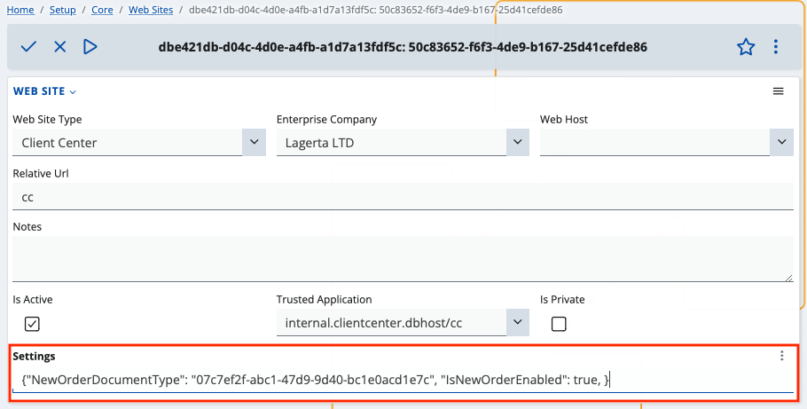

How to apply platform settings
Like all ERP websites, the Client Center can have its settings changed on an individual level.
This includes specific visual and functional modifications.
Configuration capabilities
Below is a list of settings you can apply to the Client Center:
The ability to reveal or hide the New Order button, allowing or restricting users to create new orders.
By default, this button is hidden so as to prevent potential information leaks.
You need to enable the functionality manually only when that’s necessary.
The ability to define the sales order document type for new orders in the Client Center.
You must input a valid SalesOrder.DocumentType ID.
This could be quite helpful for separating orders made in the Client Center from those made in other modules.
The ability to easily generate comprehensive business analytics for orders made in the CC.
JSON format definition
Client Center settings must be configured in a key-value pair JSON format.
Prerequisites
You need to navigate to your website's main environment, access the Client Center's details, and enter the website's settings.
Editing mode must be active for all website-related fields.
If the Settings field is not in view, use the Show/hide field button to toggle its visibility.
Step-by-step process
- Inside the Settings field, input the following:
{
"NewOrderDocumentType": "DocumentType.Id",
"IsNewOrderEnabled": true/false,
"IsOrdersEnabled": true/false
}
where
NewOrderDocumentType takes the valid ID value of a new (sales) order.
IsNewOrderEnabled defines if the button for order creation will be shown or hidden to the users when they log into the system (true meaning visible, false meaning restricted).
IsOrdersEnabled determines whether the "Orders" section will be present in the Client center. (true meaning visible, false meaning restricted).

- Apply the new settings.
Troubleshooting
Depending on how you define the settings, you can encounter the following scenarios:
- Both fields are set:
"NewOrderDocumentType": "07c7ef2f-abc1-47d9-9d40-bc1e0acd1e7c",
"IsNewOrderEnabled": true
This results in the menu button allowing for the creation of a new order to be shown, and the document type to be set as a sales order.
If the ID doesn’t match any document of type Sales order, you’ll get an error:
008 - Not well formatted json string
You need to erase all inputted values, save your progress, refresh the website, and insert the correct values.
- Only one of the fields is set:
"IsNewOrderEnabled": true
Here, the system will generate another error:
009 – NewOrderDocumentType is set, but DocumentType is null
- No fields are set:
In this scenario, both fields assume two values by default:
"NewOrderDocumentType": "CRM_SALES_ORDER.Id",
"IsNewOrderEnabled": false
The button used for creating a new order will not be shown.
If you try to use a link leading to the direct creation of an order, you’ll see the following message:
You are not authorized to view this page.
For more information, see the reference.
Automatic tracking
Whenever you apply or change settings for the Client Center, they’re tracked by the system in real-time and are reflected immediately.
User-level security
By default, the Client Center uses a system user known as System-Application-User.
This user has rights to apply or change settings only in accordance with the normal functioning of the website.
For better security, another more restricted user can be used.
By default, the System-Application-User has System rights, but reflects used licenses as well.
It’s automatically assigned whenever a new website is created and whenever a trusted application is added through the UI.
Error visualization
When you encounter a problem in the platform, a relevant, easy-to-read and interactive error message will be shown explaining its nature.